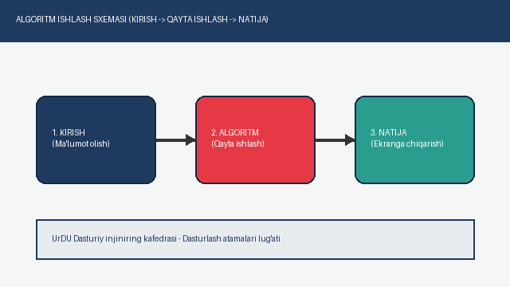
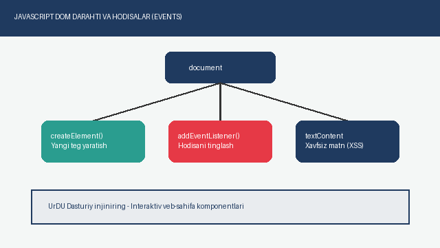

O'zgaruvchi (Variable)
Kompyuter xotirasida ma'lum bir qiymatni (son, matn yoki mantiqiy belgi) vaqtincha saqlash uchun nomlangan xotira katagi.
Misol: JavaScript'da const talabaYoshi = 20; ko'rinishida e'lon qilinadi.
Urganch davlat universiteti Dasturiy injiniring yo'nalishi talabalari uchun interaktiv IT qo'llanma
Dasturlash olamida ko'plab maxsus so'zlar va texnik iboralar mavjud. Ularni aniq tushunish har bir bo'lajak dasturchi uchun muvaffaqiyat poydevoridir.
Eng muhim tushunchalardan biri bu Algoritm bo'lib, u muammoni hal qilish uchun aniq buyruqlar ketma-ketligini bildiradi. Endilikda saytimizda barcha atama va o'quv modullarini JavaScript orqali qidirish, filtrlash va saralash imkoniyati qo'shildi.
Kompyuter xotirasida ma'lum bir qiymatni (son, matn yoki mantiqiy belgi) vaqtincha saqlash uchun nomlangan xotira katagi.
Misol: JavaScript'da const talabaYoshi = 20; ko'rinishida e'lon qilinadi.
Muayyan vazifani bajaradigan, nomlangan va dasturning istalgan joyida qayta chaqirib ishlatish mumkin bo'lgan mustaqil kod bloki.
Afzalligi: Kod takrorlanishining (DRY prinsipi) oldini oladi.
Bir nechta qiymatlarni tartiblangan ro'yxat ichida saqlaydigan ma'lumotlar tuzilmasi. map, filter, reduce kabi metodlarga ega.
Qo'llanilishi: Katalogdagi 12 ta modulni dinamik chiqarishda.


12 ta dasturlash moduli orasidan qidiruv, kategoriya filtri, saralash va sevimlilar ro'yxati bilan tanishing.
Katalog sahifasiga o'tish